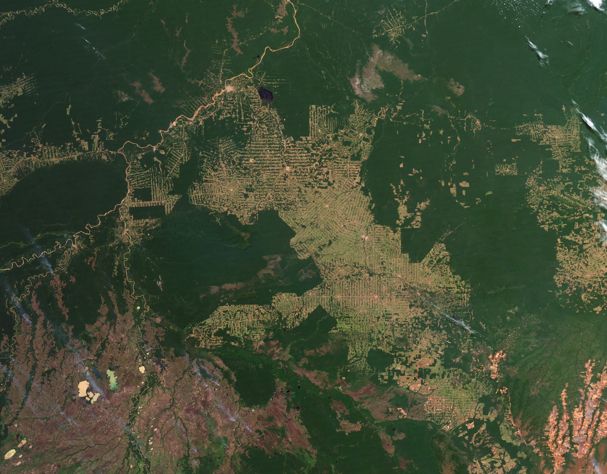
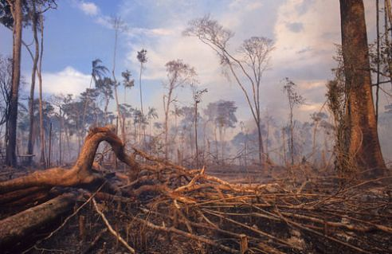

The Amazon rainforest’s last line of defense may just be the indigenous tribes that call it home.
Spanning more than two million square miles, the so-called “lungs” of the planet produce 20% of atmospheric oxygen levels. However, due to massive amounts of deforestation, the Amazon rainforest faces an unprecedented threat.
A satellite image of deforestation in the amazon
Since the early 1980s, images of tree loss in the Amazon could be seen from space; and as of 2004, 27,000 kilometers per year of deforestation was attributed to Brazil according to National Geographic. The seemingly imperturbable wave of logging halted at the borders of tribal lands. However, the political climate in Brazil in the past year has contributed to a new threat to these tribes’ livelihoods.
With the advent of a pro-business standpoint, Brazil, the location of 60% of the Amazon, has seen a record amount of deforestation. The deforestation between May and July of this year alone has exceeded the deforestation done in the last three years. Such a rapid rise in rainforest loss in turn raises the stakes for the approximately 400 tribes that reside in the Amazon. With the inherent difficulty in enforcing the law in the dense rainforest, (along with government practices curtailing environmental policies) tribes like the Kayapo and Guajajara have to take on illegal logging practices: but not entirely on their own.

A Kayapo tribesman
Indigenous tribes like the Kayapo gained recognition in the late 1900s. Legal protections slowed the onslaught on their lands, but proved difficult to enforce due to illegal activity. Subsequently, tribal people have launched protests and garnered publicity. This has led to increased awareness and interest by various civil rights organizations: a necessary step towards preserving the rainforest. Indigenous people have also taken measures to form their own NGOs, and reducing financial pressure from mining and logging organizations by increasing economic self sufficiency.
Funding from outside agencies boosts tribal peoples’ abilities regarding protecting their land from illegal activity. Equipment like GPS systems and radio, provided by indigenous rights groups and NGOs, are often instrumental in enabling indigenous people. Tribes like the Guajajara use such equipment to actively seek out and thwart illegal activity- though not without cost.
Destruction caused by logging activity in the Amazon
Areas like the one the Guajajara operate in are the most dangerous places for indigenous people. In their pursuit of the resources the Amazon has to offer, logging organizations are often ruthless in their approach. More than 140 people have been killed in Brazil alone in the struggle to save the rainforest as of 2015. Death threats and danger are the norm for those engaged in protecting their home from illegal activity.
However, the fact remains- indigenous land defenders are doing the world a service through their efforts. The Amazon rainforest serves as a truly monumental bastion against climate change, consuming vast amounts of carbon dioxide each year. Due to continued external support, indigenous people are able to patrol their lands and enforce protections. Yet, these warriors have a long road ahead of them; one that they need not traverse alone.